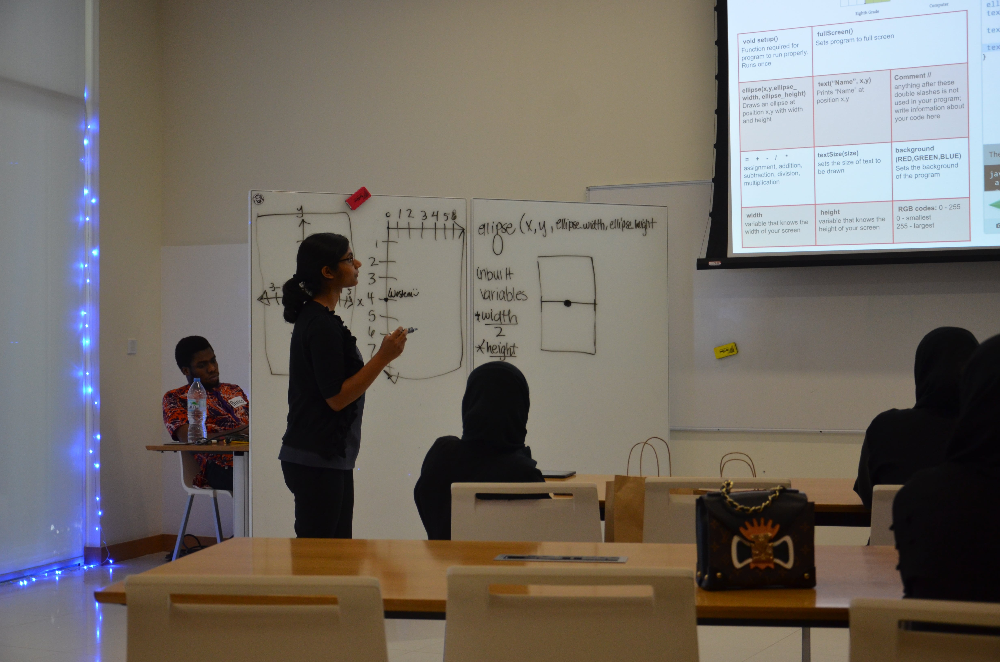
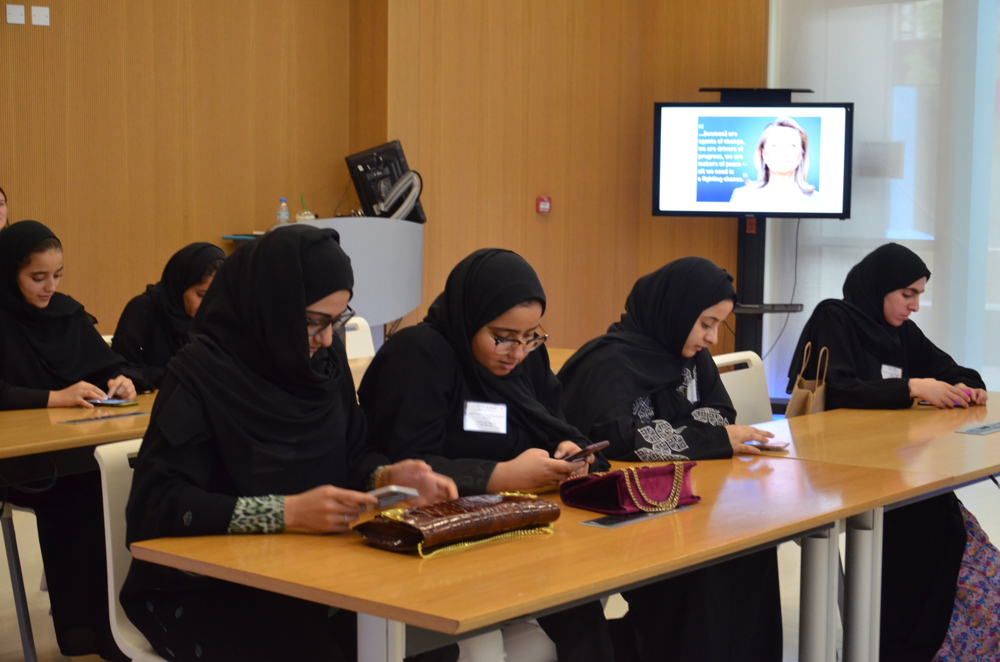
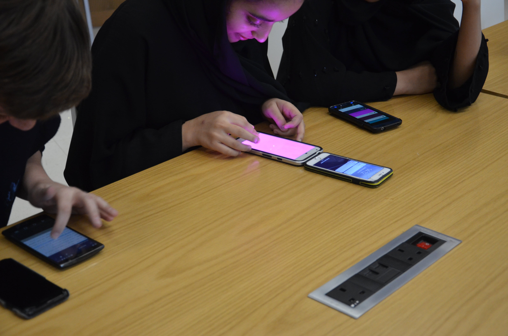
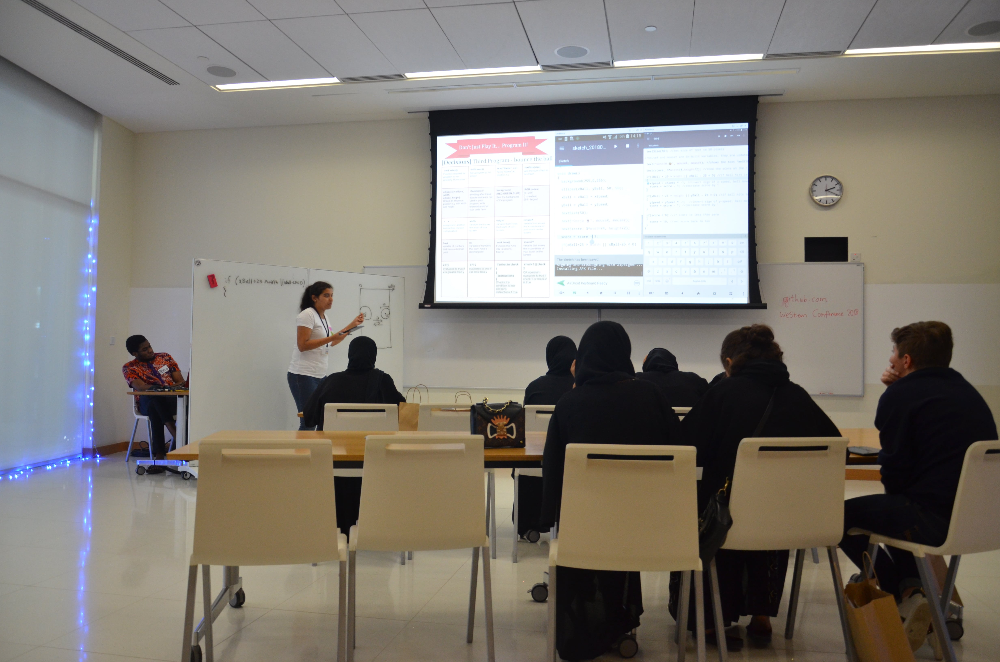

weSTEM Conference 2017
Workshop organizer, Abu Dhabi, UAE
My Work
• Organized workshop to teach 18 high school girls the fundamentals of computer programming with Processing.
• Trained seven facilitators to teach the fundamentals of software programming with Processing on mobile phones.
• Developed and deployed the Android servers used for teaching at the conference.
Photos



